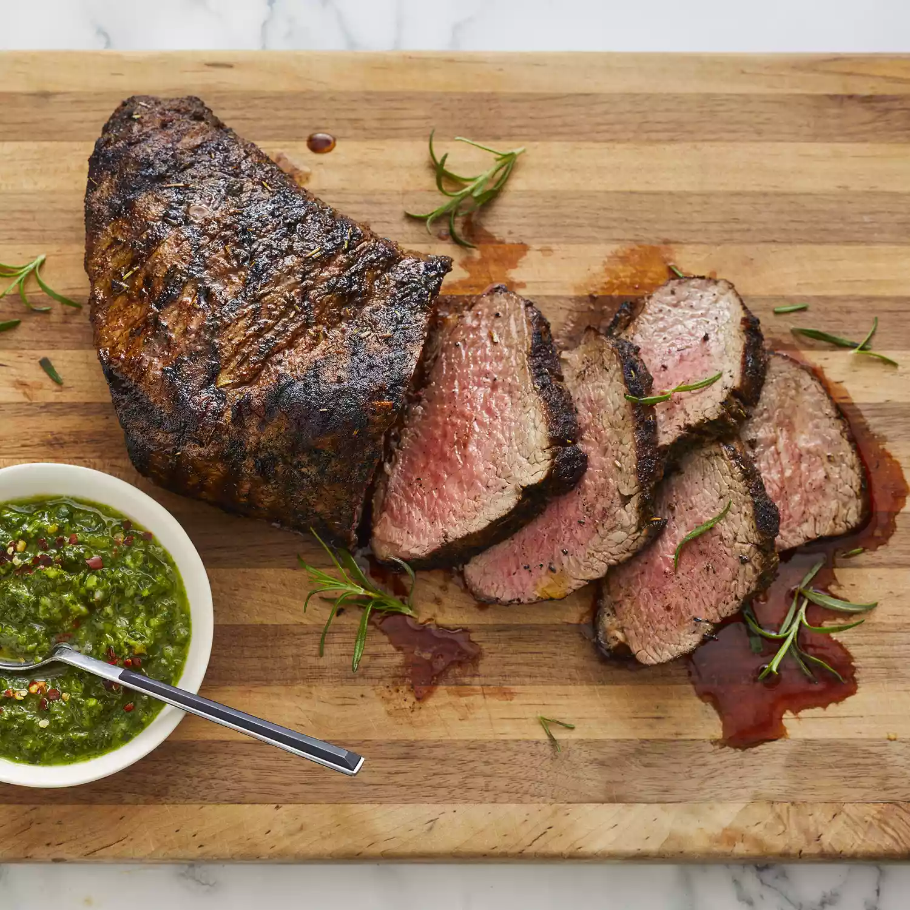

Recipe Information
Prep Time: 20 minutes
Cook Time: 25 minutes
Additional Time: 4 hours 30 minutes
Total Time: 5 hours 15 minutes
Servings: 6<
Nutritional Facts
(per serving)
452 Calories
24g Fat
4g Carbs
53g Protein
Ingredients
- 2 teaspoons salt
- 2 teaspoons freshly ground black pepper
- 2 teaspoons garlic powder
- 1 ½ teaspoons paprika
- 1 teaspoon onion powder
- 1 teaspoon dried rosemary
- ¼ teaspoon cayenne pepper
- 1 (2 ½ lb) beef tri-tip roast
- ⅓ cup red wine vinegar
- 4 cloves crushed garlic
- ½ teaspoon Dijon mustard
Directions
- Stir salt, black pepper, garlic poweder, paprika, onion powder, rosemary, and cayenne pepper together in a bowl
- Place tri-tip in a glass baking dish and coat on all sides with spice mixture. Cover the dish with plastic wrap and
refrigerate for 4 hours
- Combine vinegar, vegetable oil, crushed garlic, and Dijon mustard in a sealable container. Cover the container and
shake until ingredients are blended
- Remove tri-tip from the refrigerator. Let sit uncovered at room temperature for 30 minutes
- Preheat an outdoor grill for high heat; lightly oil the grates
- Place tri-tip on the preheated grill and brush with vinegar mixture. Cook for 4 minutes, flip, and baste. Flip and
baste every 4 minutes until tri-tip starts to firm up and is reddish-pink and juicy in the center, 25 to 30 minutes
total. An instant-read thermometer inserted into the center should read 130 degrees F (54 degrees C). Let rest for
at least 10 minutes before slicing
Return to Top
Return to Homepage